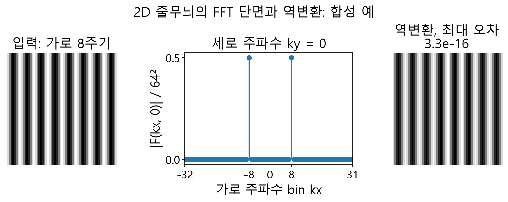

주파수 변환 왕복
줄무늬의 가로 주파수와 역변환 결과는 어떻게 보일까요? 원본은 가로 폭당 8주기이고, 정규화한 FFT 단면에는 kx=−8과 +8에서 각각 0.5의 피크가 있습니다.

자료에서 확인할 점
- 가운데 그래프는 전체 2D FFT에서 ky=0인 행의 진폭을 64²로 나눈 값입니다.
- 역변환은 표시용 크기가 아닌 원래 복소 배열을 사용하며, 표시된 오차는 NumPy 부동소수 계산값입니다.
실제 API에 적용하기
2차원 DFT는 F(u,v)=Σ f(x,y) exp(-2πi(ux/W+vy/H)) 입니다. 주파수 배열은 시프트하지 않아 DC가 (0,0)에 있습니다. 크기 영상만으로 위상을 복원할 수 없으므로 필터와 역변환에는 실수부와 허수부를 함께 보존하십시오.
합성 2×2 전부 1은 Backward 순변환에서 DC=4, 나머지=0입니다. 무필터 역변환으로 재구성 오차를 확인한 뒤 필터를 적용하십시오.
2차원 변환의 각 계수는 영상 전체에 대한 특정 수평·수직 주파수 성분을 표현합니다. 배열의 (0,0)은 공간상 일정한 값에 대응하는 DC입니다. 이 경로는 출력을 자동으로 중앙 이동하지 않으므로, 화면에서 중앙을 저주파로 가정해 마스크를 그리면 의도와 다른 영역을 바꿀 수 있습니다.
정규화와 복소 결과 · FFT · 주파수 필터에서 함수 선언, 인자와 반환 결과를 확인하세요.
설명과 실행 결과의 범위
NumPy FFT와 역변환을 사용한 합성 예입니다. 세로 주파수 ky=0 단면에서 가로 주파수 ±8의 대칭 피크를 읽습니다. SDK 호출의 스케일 설정과 출력 형식은 별도로 확인합니다.